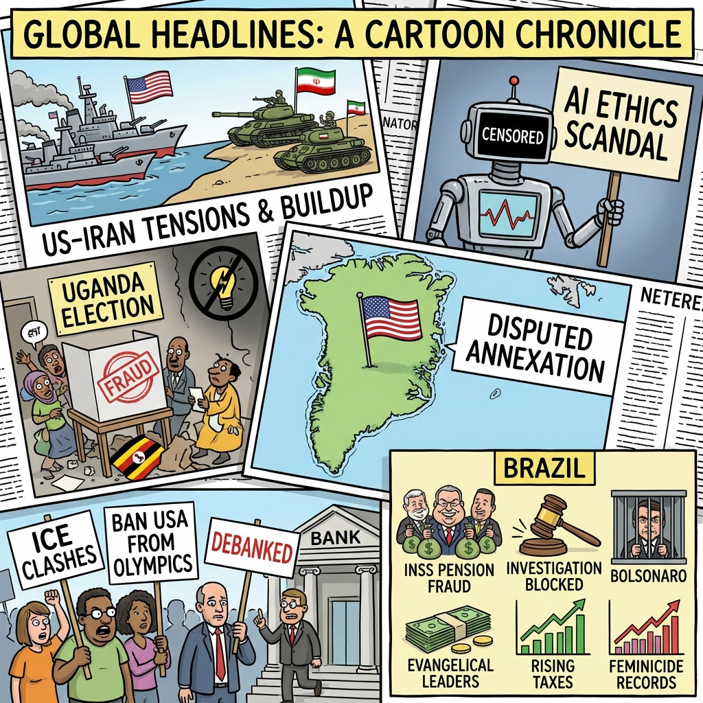

The Daily Globe: US Signals Potential Strikes on Iran Amid Evacuations, Clashes in Minneapolis After Federal Agent Shooting, and Escândalo INSS: Malafaia Chama Damares de Linguaruda
Published on 2026-01-16

World
- US Signals Potential Strikes on Iran Amid Evacuations
President Trump's military buildup, carrier redeployments, and international backlash from Saudi Arabia refusing airspace and Europe criticizing US moves on Greenland.
- Uganda Presidential Election Amid Internet Blackouts
Incumbent Yoweri Museveni vs Bobi Wine, with tight security, fraud allegations, and global concerns over African democracy.
- X's Grok AI Backlash Over Explicit 'Undressing' Images
Policy reversal after AI generated explicit images of real people; broader AI ethics and power grid strain debates.
- Trump's Push for Greenland Annexation Faces Opposition
Denmark, EU reject US control; polls show 75% Americans against amid foreign policy isolationism.
USA
- Clashes in Minneapolis After Federal Agent Shooting
Anti-ICE protests follow controversial shootings; debates on immigration enforcement and police tactics.
- Calls to Ban USA from Olympics Over Military Interventions
IOC addresses pressure citing US actions in Venezuela, threats to Greenland and Cuba.
- Candace Owens vs Charlie Kirk Feud Escalates
Viral accusations of secret powers highlight fractures in conservative media.
- Scott Ritter De-Banked Without Explanation
Citizens Bank ends 26-year relationship, raising civil liberties concerns.
Brazil
- Escândalo INSS: Malafaia Chama Damares de Linguaruda
Desvios bilionários em benefícios previdenciários; pedido de acareação na CPMI com líderes evangélicos.
- PF Bloqueia R$5,7bi em Bens no Caso Banco Master
Críticas a decisões de Toffoli por cercear provas; ligações com doadores de Tarcísio de Freitas.
- Condições de Prisão de Bolsonaro e Crise de Lula
Privilégios na cela contrastam com 49% de reprovação ao governo; vetos no orçamento 2026.
- Aumento de Impostos e Recorde de Feminicídios
Críticas a mais de 30 impostos novos, prejuízos estatais e segunda maior taxa de juros do mundo.
Topic Index
- us-iran-tensions
- uganda-election
- ai-ethics-backlash
- greenland-annexation
- immigration-protests
- olympics-ban-calls
- conservative-feud
- debanking-censorship